In this chapter, we will take a break from discussing software design patterns and techniques. Instead, we will focus on a low-tech modeling process called EventStorming. This process brings together the core aspects of domain-driven design that we covered in the preceding chapters.
You will learn the EventStorming process, how to facilitate an EventStorming workshop, and how to leverage EventStorming to effectively share domain knowledge and build a ubiquitous language.
EventStorming is a low-tech activity for a group of people to brainstorm and rapidly model a business process. In a sense, EventStorming is a tactical tool for sharing business domain knowledge.
An EventStorming session has a scope: the business process that the group is interested in exploring. The participants are exploring the process as a series of domain events, represented by sticky notes, over a timeline. Step by step, the model is enhanced with additional concepts—actors, commands, external systems, and others—until all of its elements tell the story of how the business process works.
Just keep in mind that the goal of the workshop is to learn as much as possible in the shortest time possible. We invite key people to the workshop, and we don’t want to waste their valuable time.
Alberto Brandolini, creator of the EventStorming workshop
Ideally, a diverse group of people should participate in the workshop. Indeed, anyone related to the business domain in question can participate: engineers, domain experts, product owners, testers, UI/UX designers, support personnel, and so on. As more people with different backgrounds are involved, more knowledge will be discovered.
Take care not to make the group too big, however. Every participant should be able to contribute to the process, but this can be challenging for groups of more than 10 participants.
EventStorming is considered a low-tech workshop because it is done using a pen and paper—a lot of paper, actually. Let’s see what you need in order to facilitate an EventStorming session:
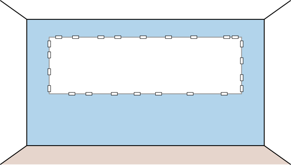
An EventStorming workshop is usually conducted in 10 steps. During each step, the model is enriched with additional information and concepts.
EventStorming starts with a brainstorm of the domain events related to the business domain being explored. A domain event is something interesting that has happened in the business. It’s important to formulate domain events in the past tense (see Figure 12-2)—they are describing things that have already happened.
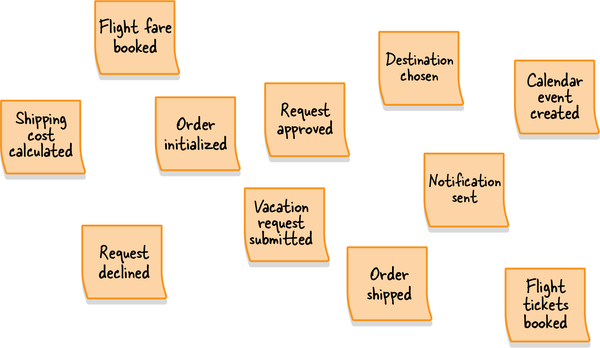
During this step, all participants are grabbing a bunch of orange sticky notes, writing down whatever domain events come to mind, and sticking them to the modeling surface.
At this early stage, there is no need to worry about ordering events, or even about redundancy. This step is all about brainstorming the possible things that can happen in the business domain.
The group should continue generating domain events until the rate of adding new ones slows significantly.
Next, the participants go over the generated domain events and organize them in the order in which they occur in the business domain.
The events should start with the “happy path scenario”: the flow that describes a successful business scenario.
Once the “happy path” is done, alternative scenarios can be added—for example, paths where errors are encountered or different business decisions are taken. The flow branching can be expressed as two flows coming from the preceding event or with arrows drawn on the modeling surface, as shown in Figure 12-3.
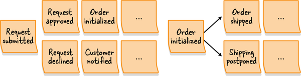
This step is also the time to fix incorrect events, remove duplicates, and of course, add missing events if necessary.
Once you have the events organized in a timeline, use this broad view to identify points in the process that require attention. These can be bottlenecks, manual steps that require automation, missing documentation, or missing domain knowledge.
It’s important to make these inefficiencies explicit so that it will be easy to return to them as the EventStorming session progresses, or to address them afterward. The pain points are marked with rotated (diamond) pink sticky notes, as illustrated in Figure 12-4.
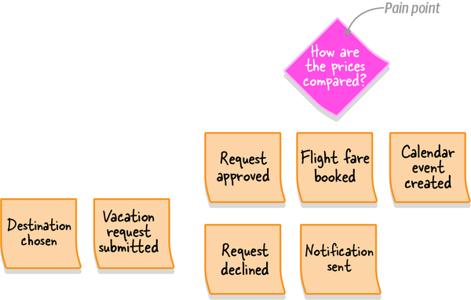
Of course, this step is not the only opportunity to track pain points. As a facilitator, be aware of the participants’ comments throughout the process. When an issue or a concern is raised, document it as a pain point.
Once you have a timeline of events augmented with pain points, look for significant business events indicating a change in context or phase. These are called pivotal events and are marked with a vertical bar dividing the events before and after the pivotal event.
For example, “shopping cart initialized,” “order initialized,” “order shipped,” “order delivered,” and “order returned” represent significant changes in the process of making an order, as shown in Figure 12-5.
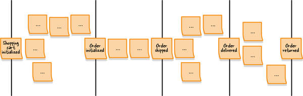
Pivotal events are an indicator of potential bounded context boundaries.
Whereas a domain event describes something that has already happened, a command describes what triggered the event or flow of events. Commands describe the system’s operations and, contrary to domain events, are formulated in the imperative. For example:
Publish campaign
Roll back transaction
Submit order
Commands are written on light blue sticky notes and placed on the modeling space before the events they can produce. If a particular command is executed by an actor in a specific role, the actor information is added to the command on a small yellow sticky note, as illustrated in Figure 12-6. The actor represents a user persona within the business domain, such as customer, administrator, or editor.
Naturally, not all commands will have an associated actor. Therefore, add the actor information only where it’s obvious. In the next step we will augment the model with additional entities that can trigger commands.
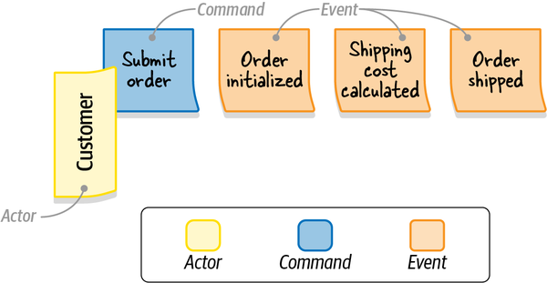
Almost always, some commands are added to the model but have no specific actor associated with them. During this step, you look for automation policies that might execute those commands.
An automation policy is a scenario in which an event triggers the execution of a command. In other words, a command is automatically executed when a specific domain event occurs.
On the modeling surface, policies are represented as purple sticky notes connecting events to commands, as shown by the “Policy” sticky note in Figure 12-7.
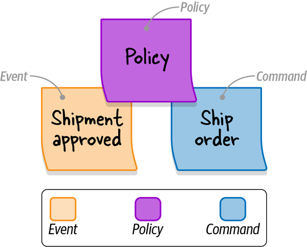
If the command in question should be triggered only if some decision criteria is met, you can specify the decision criteria explicitly on the policy sticky note. For example, if you need to trigger the escalate command after the “complaint received” event, but only if the complaint was received from a VIP customer, you can explicitly state the “only for VIP customers” condition on the policy sticky.
If the events and commands are far apart, you can draw an arrow on the modeling surface to connect them.
A read model is the view of data within the domain that the actor uses to make a decision to execute a command. This can be one of the system’s screens, a report, a notification, and so on.
The read models are represented by green sticky notes (see the “Shopping cart” note in Figure 12-8) with a short description of the source of information needed to support the actor’s decision. Since a command is executed after the actor has viewed the read model, on the modeling surface the read models are positioned before the commands.
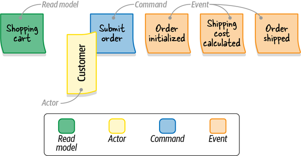
This step is about augmenting the model with external systems. An external system is defined as any system that is not a part of the domain being explored. It can execute commands (input) or can be notified about events (output).
The external systems are represented by pink sticky notes. In Figure 12-9, the CRM (external system) triggers execution of the “Ship Order” command. When the shipment is approved (event), it is communicated to the CRM (external system) through a policy.
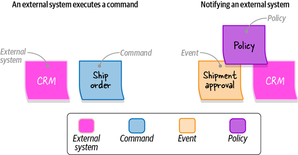
By the end of this step, all commands should either be executed by actors, triggered by policies, or called by external systems.
Once all the events and commands are represented, the participants can start thinking about organizing related concepts in aggregates. An aggregate receives commands and produces events.
Aggregates are represented as large yellow sticky notes, with commands on the left and events on the right, as depicted in Figure 12-10.
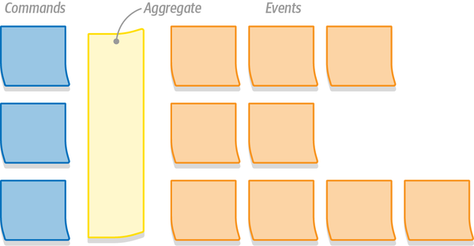
The last step of an EventStorming session is to look for aggregates that are related to each other, either because they represent closely related functionality or because they’re coupled through policies. The groups of aggregates form natural candidates for bounded contexts’ boundaries, as shown in Figure 12-11.
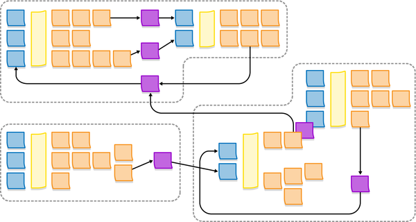
Alberto Brandolini, the creator of the EventStorming workshop, defines the EventStorming process as guidance, not hard rules. You are free to experiment with the process to find the “recipe” that works best for you.
In my experience, when introducing EventStorming in an organization I prefer to start by exploring the big picture of the business domain by following steps 1 (chaotic exploration) through 4 (pivotal events). The resultant model covers a wide range of the company’s business domain, builds a strong foundation for ubiquitous languages, and outlines possible boundaries for bounded contexts.
After gaining the big picture and identifying the different business processes, we continue to facilitate a dedicated EventStorming session for each relevant business process—this time, following all the steps to model the complete process.
At the end of a full EventStorming session, you will have a model describing the business domain’s events, commands, aggregates, and even possible bounded contexts. However, all of these are just nice bonuses. The real value of an EventStorming session is the process itself—the sharing of knowledge among different stakeholders, alignment of their mental models of the business, discovery of conflicting models, and, last but not least, formulation of the ubiquitous language.
The resultant model can be adopted as a basis for implementing an event-sourced domain model. The decision of whether to go that route or not depends on your business domain. If you decide to implement the event-sourced domain model, you have the bounded context boundaries, the aggregates, and of course, the blueprint of the required domain events.
The workshop can be facilitated for many reasons:
In addition to when to use EventStorming, it’s important to mention when not to use it. EventStorming will be less successful when the business process you’re exploring is simple or obvious, such as following a series of sequential steps without any interesting business logic or complexity.
When facilitating an EventStorming session with a group of people who have never done EventStorming before, I prefer to start with a quick overview of the process. I explain what we are about to do, the business process we are about to explore, and the modeling elements we will use in the workshop. As we go through the elements—domain events, commands, actors, and so on—I build a legend, depicted in Figure 12-12, using the sticky notes we will use and labels to help the participants remember the color code. The legend should be visible to all participants during the workshop.
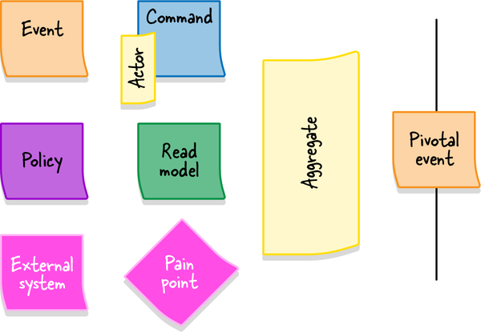
As the workshop progresses, it’s important to track the energy of the group. If the dynamics are slowing down, see whether you can reignite the process by asking questions or whether it’s time to advance to the next stage of the workshop.
Remember that EventStorming is a group activity, so ensure that it is handled as such. Make sure everyone has a chance to participate in the modeling and the discussion. If you notice that some participants are shying away from the group, try to involve them in the process by asking questions about the current state of the model.
EventStorming is an intense activity, and at some point, the group will need a break. Don’t resume the session until all the participants are back in the room. Resume the process by going through the current state of the model to return the group to a collaborative modeling mood.
EventStorming was invented as a low-tech activity in which people interact and learn together in the same room. The creator of the workshop, Alberto Brandolini, has often objected to conducting EventStorming remotely because it’s impossible to achieve the same levels of participation, and hence, collaboration and knowledge sharing, when the group is not colocated.
However, with the onset of the COVID-19 pandemic in 2020, it became impossible to have in-person meetings and do EventStorming as it was meant to be done. A number of tools attempted to enable collaboration and facilitation of remote EventStorming sessions. At the time of this writing, the most notable of them is miro.com. Be more patient when doing online EventStorming and take into account the less effective communication that results.
In addition, my experience shows that remote EventStorming sessions are more effective with a smaller number of participants. While as many as 10 people can attend an in-person EventStorming session, I prefer to limit online sessions to five participants. When you need more participants to contribute their knowledge, you can facilitate multiple sessions, and afterward compare and merge the resultant models.
When the situation allows, return to in-person EventStorming.
EventStorming is a collaboration-based workshop for modeling business processes. Apart from the resultant models, its primary benefit is knowledge sharing. By the end of the session, all the participants will synchronize their mental models of the business process and take the first steps toward using a ubiquitous language.
EventStorming is like riding a bicycle. It’s much easier to learn by doing it than to read about it in a book. Nevertheless, the workshop is fun and easy to facilitate. You don’t need to be an EventStorming black belt to get started. Just facilitate the session, follow the steps, and learn during the process.
Who should be invited to an EventStorming session?
Software engineers
Domain experts
QA engineers
All stakeholders having knowledge of the business domain that you want to explore
When is it a good opportunity to facilitate an EventStorming session? Select all that apply.
To build a ubiquitous language.
To explore a new business domain.
To recover lost knowledge of a brownfield project.
To introduce new team members.
What outcomes can you expect from an EventStorming session (depending on the session’s purpose)? Select all that apply.
A better shared understanding of the business domain
A strong foundation for a ubiquitous language
Uncovered white spots in the understanding of the business domain
An event-based model that can be used to implement a domain model
1 Of course, that’s not a hard rule. Leave a few chairs if some of the participants find it hard to be on their feet for so long.